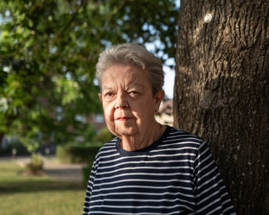

An MP has raised alarm at the slow pace of a scheme to compensate LGBT service personnel dismissed or discharged from the forces because of their sexuality, saying that at the current rate it could take more than a decade to complete the process.
Jess Brown-Fuller, the Liberal Democrat MP for Chichester, said she began examining the LGBT Financial Recognition Scheme, formally launched in December , due to the experiences of a constituent, who is one of just 69 people to have been compensated, of more than 1,200 who have applied.
Liz Stead, who was discharged from the RAF in 1969 after letters between her and her girlfriend were discovered by military police, said her case had been given priority because she has a rare lung condition. While she received compensation last month for being discharged, she is still awaiting news of a possible separate payout over how she was treated while in service.
Stead, 77, who was a radar operator, spent six months in what she calls “limbo” after the letters were discovered, which put her at the mercy of a ban on gay people serving in the UK military in place from 1967 to 2000.
Stead had served for three years when she met her girlfriend, who was also a radar operator at RAF Boulmer in Northumberland, in 1968. When Stead was moved to a posting near London the pair wrote to each other. In July that year the couple had arranged to meet up in person. Stead explained: “She didn’t turn up. The military police had arrested her and searched her belongings, and got hold of my letters.
“They got a statement from her, and asked me to do a statement – well, they coerced and bullied me to admit my sexuality. They arrested me, then searched my accommodation so they could get hold of her letters. And then for six months, I was left in limbo because we were seen as a security risk. They then made a decision, and gave us a week’s notice we were being discharged.”
Stead was also given a criminal conviction for “same-sex sexual activity” – but was never told about it. She only discovered this after she applied to the LGBT scheme and was granted a pardon, as well as given compensation.
Liz Stead belatedly discovered she had a criminal record for ‘same-sex sexual activity’.Photograph: Anna Gordon/The Guardian
Stead, who later worked as a business manager for a council, said she believed the conviction might have been the reason why she had once been turned down for a job with a government department.
She said: “When I found out about the conviction I just thought – what? My wife said to me: ‘Are you sure you didn’t do anything else?’ I said: ‘No, absolutely not. I would remember that.’”
Brown-Fuller used a parliamentary question on Thursday to highlight Stead’s case and to push the government to make sure claims were processed more quickly. She cited statistics from mid-June showing that of 1,289 applications, 44 have been completed, a timetable which if maintained would take about 14 years to clear the backlog. The Ministry of Defence (MoD) said later the total was now 69.
“It will take years to settle all of these applications, and veterans in their 60s, 70s and 80s potentially don’t have years for those payments to be settled,” Brown-Fuller said. “My frustration is shared by the LGBTQ+ veterans, because they’re angry, they’re frustrated and they’re disappointed that they’re still experiencing these delays.
“I think the government is totally aware of the issue, because there is cross-party support for this scheme. What it is not fully grasping is that the minister needs to get a handle on how quickly those payments are going out and the process.”
Stead, who lives in Chichester, is still in touch with her former girlfriend, who is in London, and has helped her complete an application to the compensation scheme. Stead says that last time she heard, her ex-girlfriend was still waiting for compensation.
An MoD spokesperson said: “We deeply regret the treatment of LGBT serving personnel between 1967 and 2000 which was wholly unacceptable.
“While we don’t hold comprehensive records of personnel discharged due to sexuality, we’re working with organisations like Fighting with Pride to ensure that we reach as many LGBT veterans who may have been affected.
“We also encourage anyone who may think that they’re affected to contact us so that we can see if we can help, and the Home Office also runs the disregards and pardons scheme for people wishing to have historic ‘offences’ wiped from their records.”